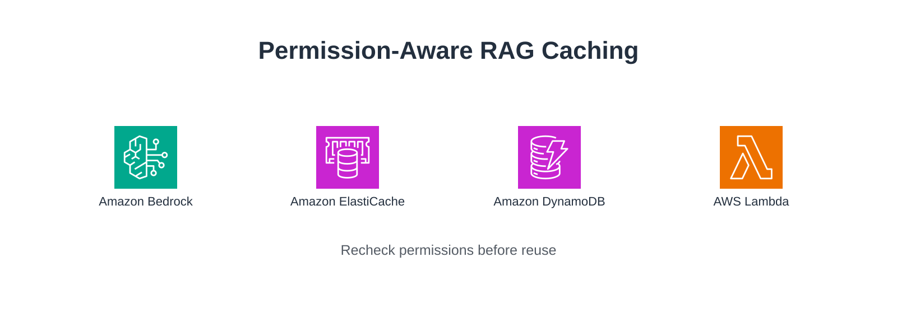
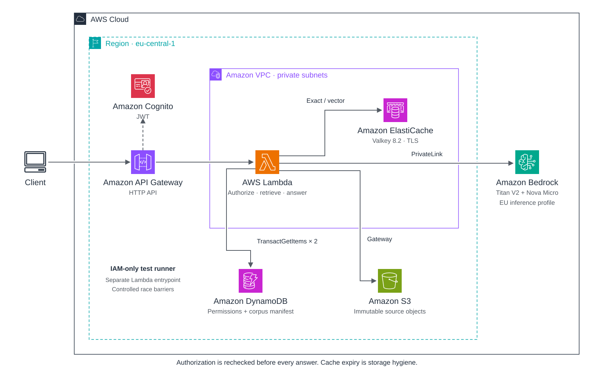
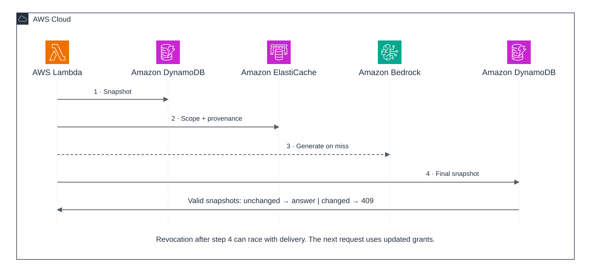

AWS sandbox experiment · measured evidence
Permission-Aware RAG Caching
Reusing a Bedrock answer without reusing an old authorization decision.

44local tests passed
23AWS scenarios passed
81.25%fewer generation calls in this fixture
Measured comparison
16 sequential requests per arm. Two synthetic products, four admitted phrasings per product, repeated twice. Every arm performs current authorization checks.
Times cover the service code inside a warm Lambda, not end-to-end HTTP latency. The sample is small, sequential and deliberately repetitive. Token savings are not a dollar-cost claim.
High similarity can still mean a different question
The genuine paraphrase “How long does Atlas keep records?” scored 0.780. Adding “NOT” to the original question scored 0.960. A deterministic admission grammar rejects negation, dates and audience qualifiers before semantic reuse.
The 0.75 threshold was chosen from fixture diagnostics. This is not a general semantic-equivalence model; the tiny grammar could also support a direct intent-key cache.
Architecture

The final authorization check
Both generated and cached answers cross the same boundary. The following is extracted directly from the deployed application source:
final = read_authority()
if final.authorization_stamp() != initial.authorization_stamp():
raise Changed("Authorization or corpus changed; retry with fresh context")
if not entry.valid_for(final, self.pipeline, scope):
raise Denied("Candidate dependencies are not authorized")

The final authority snapshot is not atomic with HTTP delivery. A revocation after that snapshot may race with the current response; the next request uses current permissions. The AWS test suite explicitly exercises this boundary.
Cleanup and source
All checked resources created by this run are absent. Verified at 2026-10-19T14:54:43.036816+00:00.
Full results and limitations · Protocol · Runbook · Per-request data · Cleanup evidence